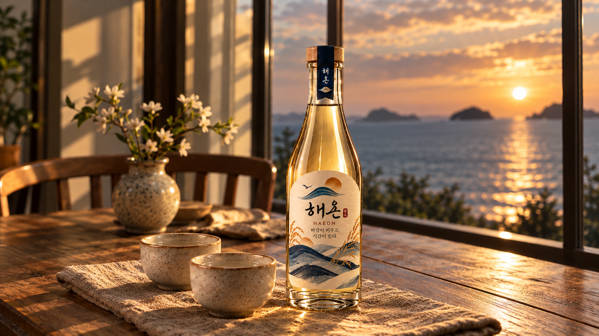
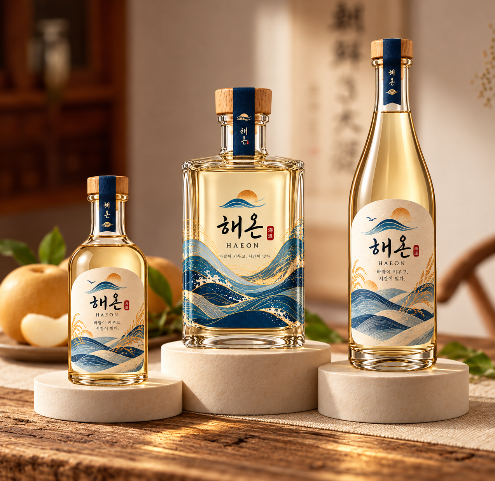
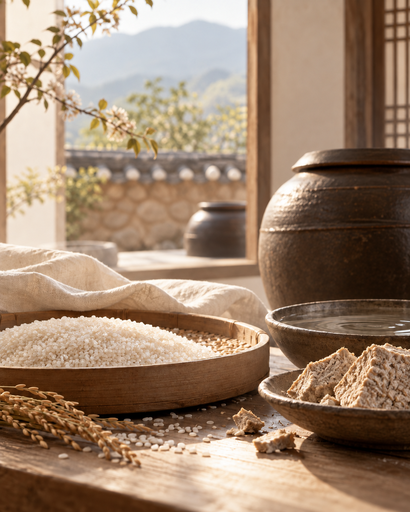

해온 HAEON — 바람이 키우고, 시간이 빚은 이야기
푸른 수묵 산맥에서 짙은 푸른 자연의 결로 이어지는 배경
해온은 우리 술이 오래도록 이어온 발효의 방식을 바탕으로 합니다.
쌀을 다루고 누룩을 빚어 술이 익어가는 시간을 기다리는 일.
바람과 햇살이 키워낸 재료를 정성으로 살피며,
자연의 속도를 존중하는 마음을 한 잔에 담았습니다.
전통의 지혜를 오늘의 식탁에 잇는 술, 해온의 이야기입니다.

바람이 키운 술
깊은 바다에서 불어온 바람,
서해의 햇살과 땅이 만나 길러 낸 강화섬쌀과 맑은 재료들.
자연이 준 시간을 느긋하게 기다리는 마음을 담아,
해온은 한 잔의 부드러운 풍미를 빚어 갑니다.

자연의 재료와 전통의 방식
좋은 술은 좋은 재료를 알아보는 마음에서 시작됩니다.
강화도 쌀과 누룩이 전해 온 발효의 지혜에,
자연이 길러낸 과실과 꽃의 향을 더합니다.
재료의 고유한 풍미가 서로 어우러지도록
오랜 기다림과 섬세한 정성을 기울여,
오늘의 식탁에도 편안하게 닿는 한 잔을 완성합니다.